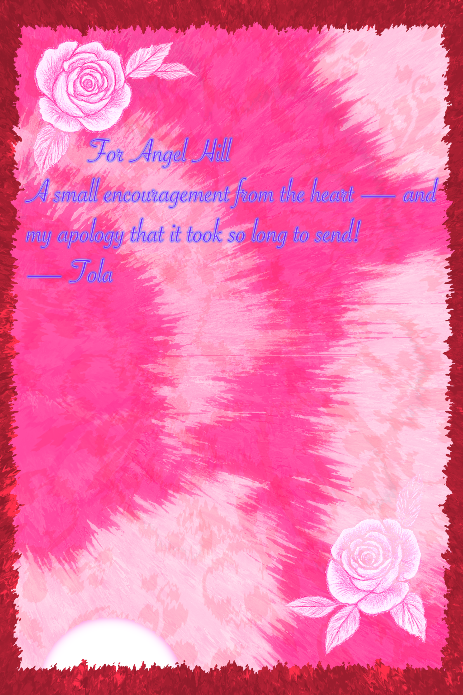
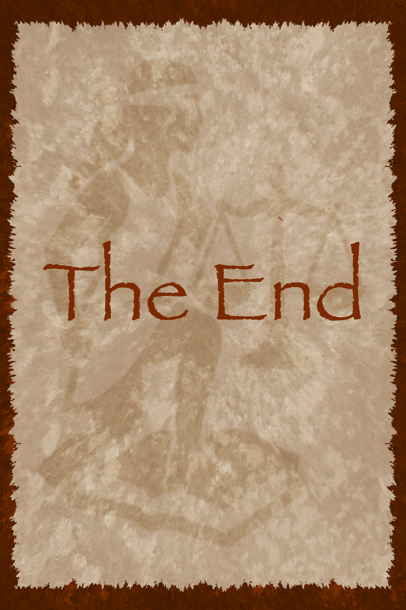

I hope this finds you well.
I really enjoyed our KD and i wanted to write a
letter of encouragement eternal to go with it:
“Therefore we do not lose heart. Though outwardly we are wasting away, yet inwardly we are being renewed day by day. For our light and momentary troubles are achieving for us an eternal glory that far outweighs them all.”
— 2 Corinthians 4:16–17
I’m sure you’ve come a long way and persevered through much after 9 years of being a disciple. The strength God has given you is working something glorious within you—even when it’s hard for you to see.
“The beginning of wisdom is this: Get wisdom. Though it costs all you have, get understanding.”
— Proverbs 4:7
I can really see you're going after Wisdom. It shows—not just in your goal to read 30 books, but in the heart behind it. Even the books you haven’t touched yet are proof that you’re invested in growing in every dimension. And finishing 26 already? That’s not just reading—that’s impressive.
“But whose delight is in the law of the Lord, and who meditates on his law day and night. That person is like a tree planted by streams of water, which yields its fruit in season and whose leaf does not wither—whatever they do prospers.”
— Psalm 1:2–3
You’re rooted. Anchored. The fruit will come—because God is the One nourishing you.
Never forget:
“The Lord makes firm the steps of the one who delights in him; though he may stumble, he will not fall, for the Lord upholds him with his hand.”
— Psalm 37:23–24
Keep going. God is with you—every step of the way.
Ps. I apologize for the bing late had my computer Got
damaged and had to replace parts an
this was a much more complex
a project than
I originally
anticipated.
